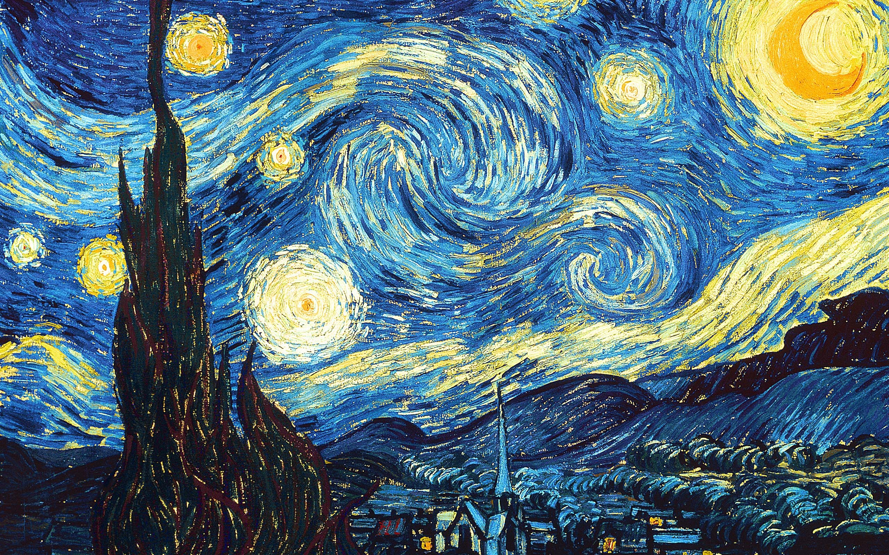

Thông tin tác phẩm
- Họa sĩ Vincent van Gogh
- Hoàn thành 1889
- Trường phái Hậu Ấn tượng
- Chất liệu Sơn dầu trên canvas
- Quốc gia Hà Lan

“Một bầu trời đang chuyển động,
nơi cô độc và hy vọng cùng tồn tại.”
Trong “The Starry Night”,
Vincent van Gogh vẽ bầu trời đêm
bằng những vòng xoáy lớn,
các đường nét cuộn mạnh
và ánh sao rực sáng như đang cháy.
Toàn bộ không gian
dường như không đứng yên,
mà đang chuyển động theo cảm xúc của người họa sĩ.
Bên dưới bầu trời dữ dội ấy
là ngôi làng nhỏ chìm trong im lặng,
với những mái nhà tối màu
và ánh đèn yếu ớt.
Sự đối lập giữa bầu trời hỗn loạn
và mặt đất yên tĩnh
tạo nên cảm giác vừa bất an,
vừa cô độc.
Cây bách đen cao vút ở tiền cảnh
như một ngọn lửa đang vươn lên bầu trời,
trở thành cầu nối
giữa mặt đất và vũ trụ.
Van Gogh không cố tái hiện thiên nhiên
theo cách hiện thực,
mà dùng màu sắc và nhịp điệu nét cọ
để biến cảm xúc thành hình ảnh.
Chính vì vậy,
“The Starry Night”
không chỉ là một phong cảnh đêm,
mà giống như bức chân dung tinh thần
của Van Gogh —
dữ dội,
cô độc,
nhưng vẫn luôn hướng về ánh sáng giữa bóng tối.